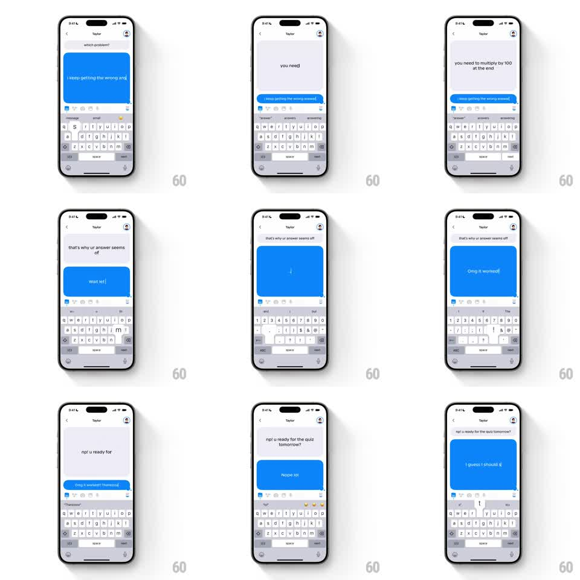

Media
Frame-by-frame

Rebuild this interaction 1:1: Honk's live typing chat - messages materialize character by character inside blue bubbles that resize with spring physics as they grow, playing out a full back-and-forth conversation with Taylor in real time.

Rebuild this interaction 1:1: Honk's live typing chat - messages materialize character by character inside blue bubbles that resize with spring physics as they grow, playing out a full back-and-forth conversation with Taylor in real time.
## Integration
Integration: stack-agnostic spec - springs given as stiffness/damping, timed motions as duration + curve; map every value to your framework and animation library of choice.
## Scene
Honk 1:1 chat ("Taylor"), keyboard open. A scripted conversation plays live: "which problem?", "i keep getting the wrong answer", "you need to multiply by 100 at the end", "that's why ur answer seems of", "wait w!", "Omg it worked!", "np! u ready for the quiz tomorrow?", "Nope lol", "I guess I should s..." - incoming messages gray at top, outgoing blue bubbles near the keyboard.
## Motion spec
Pattern: real-time character-by-character bubble typing.
- Each message types out one character at a time (~35ms per character, jitter +-15ms) directly inside its bubble.
- The bubble resizes continuously around the growing text with Honk's resize spring (stiffness ~380, damping ~22, small overshoot) - width grows per word, height jumps per wrapped line.
- A new bubble springs in at minimal size (scale 0.6 -> 1, 200ms) when a message starts; the previous bubble settles and nudges up (layout spring, 250ms).
- Sender alternation: incoming gray bubbles type at the top; outgoing blue bubbles type just above the keyboard; a 600-900ms reading pause separates turns.
- Autocomplete suggestions above the keyboard update as words form.
## Calibration
- Typing cadence varies like a human - bursts on short words, pauses before punctuation.
- Bubbles stay single-line-height minimum; never collapse to zero between messages.
## Reduced motion
Messages appear whole with a 150ms fade; no typing or resize animation.
## Don't miss
- Lowercase casual copy is intentional ("ur", "np!", "lol") - preserve exact strings.
- The typing happens in the bubble itself, not in an input field.